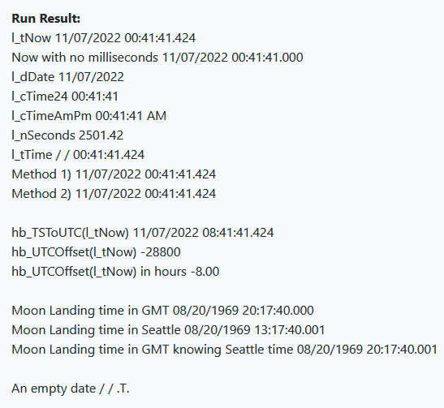
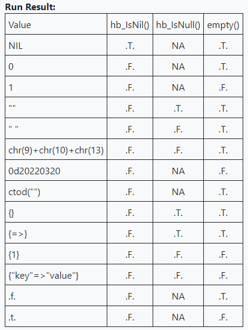
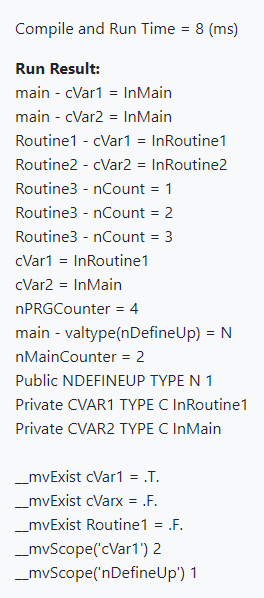
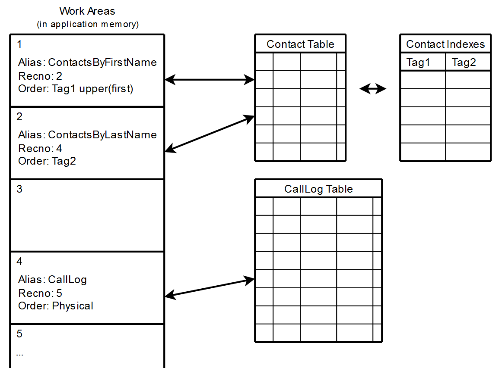

Harbour Developer's Guide - Early Access
 Author: Eric Lendvai
Author: Eric Lendvai
Table of Contents
- Early Access
- Prerequisites
- Introduction
- Hello World
- Code Formatting
- Comparison Operators
- Logical Operators
- Bitwise Operators
- Identifiers
- Data Types
- Assignments
- Date, Time, Datetime (timestamp) and UTC variables
- Conditional Statements
- Loops
- Conditional Loops
- NULL,NIL and EMPTY
- Variables
- Workareas,Tables and Indexes.
- UTF and Internationalization
- Classes
- System Capacities
- List of possible future sections
- Reference
- License
Early Access
Most of the articles here are released once they are complete.
Since
this is a fairly big initiative, I am making this article visible while
it is being composed, with the hope to receive reviews and contribution
from any seasoned Harbour developer.
Prerequisites
Knowledge
of any commonly-used programming language, like C / C++, Python,
JavaScript, Java. We are not covering the fundamentals of programming.
Introduction
Harbour
is a computer language that is a superset of the C language, meaning
Harbour code gets converted to C first, than compiled by any C compiler.
The
latest version of Harbour is cross platform (wherever C can be
compiled), 32-bit and 64-bit, multi-threaded ready, supports UTF content
and can even support UTF source code files. Supports the Object
Oriented (classes and objects) paradigm, runtime-compilation (evaluate
source code at runtime), p-code and native code compilation (p-code are C
arrays). Variable types variables (like Python and JavaScript), case
insensitive (like any Xbase languages), Namespace support via static
definitions (like C), interchangeable database access engine, extremely
powerful (featured) pre-compiler.
Generates extremely fast applications and components/libraries (Since compiles down to C).
Can
be used to create desktop, web and mobile apps (the later not the most
practical), but also can be used to create COM components.
Even
though its roots comes from the Clipper language (1985), its
development started in 1999, as a 100% open-source project used around
the world, mostly outside the United States.
No new recent
changes were made to its core since it is stable for so long. Most
contribution to the language are related to web support and
documentation.
Harbour is a hybrid computer language, with
similarities with GO (C compilation), JavaScript (dynamic variables),
Java/C#/C++ (Full Object Oriented support), Python (clean syntax), VFP
(database support).
The goal of this
Developer's Guide is to assist developers who use multiple programming
languages, or just want to quickly learn the basics of Harbour. We will
cover the most used features and syntax of the language with emphasis on
good practice. If there are more than one way to accomplish the same
task, the easiest to read, most succinct, or most similar to other
languages will be presented.
A reference section is available
at the end of this developer's guide, with links to resource material
for additional information.
Hello World
As with any other computer languages, every roads leads to "Hello World".
Harbour can be used to create many types of applications:
- Console Applications
- Desktop Applications with UI
- Web Applications
- REST API servers
- Web Socket Servers
- Shared Libraries (DLL or SO)
- Virtually anything that can be created in pure C
The following is the simplest version of an example console application:
| File: HelloWorld.prg |
function main()?"Hello World"return nil
To see a complete console application example of how to build a Hello World equivalent, simply use the repo https://github.com/EricLendvai/Harbour_Samples/tree/main/HelloHarbour , the example "HelloHarbour".
For a Web Application example use the repo https://github.com/EricLendvai/Harbour_FastCGI/tree/master/Examples/echo
Code Formatting
- Source code files are created as plain text with the extension .prg
- .c, .h and .ch files are also supported. .c and .h are C language files. *.ch are Harbour specific include files.
- Case Insensitive language. Only the content of variables, object properties and pre-compiler identifiers are case sensitive. The entire language syntax and any user created identifiers (variable, function, procedure, class ... names) are case insensitive. All "identifiers"Variable, function, procedure and class names can a defined and used regardless of their cases.
- All identifiers (symbols) should be max 63 characters long. Any characters beyond 63 characters are ignored. Even though string content are UTF8, the language syntax itself is ASCII. Use only the characters a-z, A-Z, 0-9 and "_". Do not use "-". First letter many not be a number.
- There are no end of line characters.
- To continue a line use the ";" character. (This is the opposite of JavaScript)
- Indentations are optional. Blank spaces and tabs are supported.
- Commenting code, 4 methods:
/* */ Like in C. Can overlap multiple lines. // Like in C. Effective till the end of line. * Like in VFP. Must be the first character on a line, besides leading blanks and tabs. The entire line will be a comment. && Like in VFP. Anywhere in a line and will be effective till the end of line - The
Harbour compiler will generate C source code.Therefore it is possible
to include pure C code in the .prg files using a pair of
#pragma BEGINDUMP #pragma ENDDUMP - Source code may include Unicode text if the -ku parameter is used when calling the harbour compiler.
- Variables and parameters may contain Unicode values regardless if compiled with -ku parameter
Comparison Operators
| Operator | Meaning | Note |
|---|---|---|
| == | Equal to | Can work for all type. For strings this also means an "Exact Match" (content length+value). The single = sign will also work in most cases. |
| != <> | Not equal to | Both methods can be used |
| < | Less than | Should only be used for numeric, date and timestamp values. When comparing strings, the comparison seems to be done in the ASCII value of each bytes from left to right. |
| > | Greater than | See note above. |
| <= | Less than or Equal to | See note above. |
| >= | Greater than or Equal to | See note above. |
| $ | String Belongs to | Can only be used between 2 strings. Case sensitive test if first string is anywhere in a second string. |
Important Note:
The operator =
(single equal sign) can also be used, but could get confused with
assignment operator. Harbour, like VFP has the concept of exact match or
non exact string matches.
If exact is OFF, using the SET
EXACT OFF command, comparing two strings of different length will be
done only on the minumum length of the two variables.
For that reason it is always better to use == since this is always an exact match (same length and content).
To make case insensitive string compares use for example the expression lower(cString1) == lower(cString2)
To make case insensitive string compares use for example the expression lower(cString1) == lower(cString2)
Logical Operators
| Operator | Meaning | Note |
|---|---|---|
| .and. | Logical and | The . (dot) are required. |
| .or. | Logical or | The . (dot) are required. |
| .not. ! | Logical not | Both operators are valid. |
Bitwise Operators
All Bitwise operators are actually extended functions that operate on numeric values. Here is the list of all the functions click here.
For example: hb_BitShift(2,3) will return 16
Identifiers
"Identifiers" are user-defined name of a program element.
For example: variable, function, procedure, class, class property and method names are all identifiers.
Only the following characters can be used to create an identifier: 0 through 9, a through z, A through Z and _ (underscore).
Identifiers may not start with the characters 0 through 9.
Identifiers are case insensitive. For example the variable ObjectColor can also be refered as OBJECTCOLOR, objectcolor, or any other casing.
Only the first 63 characters of an identifier are used to map to a runtime element.
For
example, creating two or more variables that are longer than 63
characters but have the same first 63 characters in a case insensitive
manner will generate compilation errors.
Preprocessor identifier (#define) are case sensitive and can be longer than 63 characters! When using Mingw64 C compiler I confirmed then can be longer than 1000 characters.
Data Types
This section is not about table fields (columns) data types, but instead about variables and object properties value types.
The non existence of content, and therefore of data type is represented by nil.
In Habour null, also known as empty() means a zero length content (string, array, hash array). But in databases NULL means NIL.
The following is the list of supported data types, with formatting description or examples.
| Data Type | Format | Notes | ValType() |
|---|---|---|---|
String | 'text' "text" [text] e"\"Student\" in French "élève\"" | Unlimited size. Only limited by available memory. Running on 64-bit is preferable. Content can be UTF8 or ANSI. Use hb_StrIsUTF8() to test if the string is UTF8. For UTF8 support view functions here. String value can be entered using the following delimiters: single quotes, double quotes or square brackets. C style strings can also be used. Supported escape characters: \a \b \f \n \r \t \v \\ \' \" \? \x22 \042 . See "Table of escape sequences" for definitions, except for \x (Hex) and \0 (Octal). | C |
Numeric | 1 3.1428 −12462 0XFFFF, 0xff | Numeric are internally processed as double-precision floats, like in JavaScript and many other languages. If the numeric is an integer this would mean the value must be between -9007199254740992 and 9007199254740992, otherwise precision will be lost. Value can be entered in base 10 (regular numbers) or base 16 (hexadecimals). | N |
Logical | .f. .t. .F. .T. | Only true (.t. or .T.) and false (.f. or .F.) are allowed, besides NIL. | L |
Date | {^ 2022-03-20} 0d20220320 | Template: {^ YYYY-MM-DD}Template: 0dYYYYMMDD | D |
Timestamp | {^ 2022-03-20 10:24:30 pm} t"2022-03-20 22:24:30.500" | Also known as Datetime type.Template: {^ [ YYYY-MM-DD [,] ] [ HH[:MM[:SS][.FFF]] [AM|PM] ] }Template: t"YYYY-MM-DD [H[H][:M[M][:S[S][.f[f[f[f]]]]]]] [PM|AM]"Template: t"YYYY-MM-DDT[H[H][:M[M][:S[S][.f[f[f[f]]]]]]] [PM|AM]"If used, lower case am|pm is also allowed. Incrementing are done by number of days. The difference of two Timestamps is a number of days with fraction. A blank date is allowed to just store time values. A complete section about Date/Timestamp/Datetime/Time is in this guide. | T |
Array | aArray1:={1,2,3} aArray2:={{1,2,3},{1,2,3}} aArray3:={1,2,3,"hello","a",2}} aArray1[1] aArray2[2,1] or aArray2[2][1] | Arrays
are list of values. Each array element can be of any type, including
arrays. All elements do not have to be of the same type. To refer to an array element use the [ ] (square brackets). Unlike most languages, the first element of an array is element 1. Unlike Python, you may not use -1 to refer to the last element. For multi dimension arrays, meaning arrays inside of arrays you can refer to an element use ArrayName[nPos1][nPos2][nPos3] or ArrayName[nPos1,nPos2,nPos3]. To manipulate Arrays view functions here. Some of the functions are newer and their names start with "hb_A", like for example AIns() versus hb_AIns(). The hb_A functions have more options. Arrays are always passed by reference when used as parameters for functions, procedures, methods and codeblocks. Assigning an array to any other variable or property, only assigns its reference. Making a copy or partial copy can be done via the ACopy() function, but that is only for the first dimension! When copying element of type array or object, only a reference is created! To make a full deep copy, use AClone(). All sub-arrays will also be copied, but not elements of type object. use the function hb_jsonEncode(aArray) to print out an entire array. BUT if can not be used as its definition, since the delimiters are [ ] instead of { }. A complete section about Arrays will be available further in this guide. | |
Hash Array | {=>} {"FirstName" => "Eric", "LastName" => "Lendvai", 1241 => "Seattle", {^ 2022-03-20} => .t. } | A
Hash Array is an array where the position of the element is not its 1
based index, but a "key" that can be of type String, Numeric, Date or
Timestamp. Harbour Hash Arrays are kind of similar to Python
Dictionaries. It is allowed to mix Hash Array key types. For example a Hash Array hHash could have values associated to keys like: 3, "First Name", {^ 2022-03-20}. Since a Hash Array key can be of numeric type, it is important to initialize the Hash Array first, using {=>} or hb_Hash(...). To manipulate Hash Arrays view functions here. Assigning a value to a Hash Array element will automatically create it if it is missing, meaning the dimension of the Hash Array will automatically increase if needed. Making a reference to a non existing key will generate an out of bound error. To avoid those errors, the easiest is to use the hb_HGetDef() function which can return a default value, including nil. A complete section about Hash Arrays will be available further in this guide. | |
Object | oObject := ClassName() oObject:property1 oObject:method1(par1,par2) | As
in all other object oriented languages (except for JavaScript where an
object can exist without a class), a Harbour object is created using a
class definition. Objects may have properties (also referred to as
"data") and methods. Creating an object using the class name as a function, does not call automatically a constructor (init) method. It is advised to also create object constructor functions to call a method of a class to initialize properties. Example of an object constructor function for a class hb_orm_SQLConnect: function hb_SQLConnect(par_BackendType,par_Driver,par_Server,par_Port,par_User,par_Password,par_Database,par_Schema) return hb_orm_SQLConnect():SetAllSettings(par_BackendType,par_Driver,par_Server,par_Port,par_User,par_Password,par_Database,par_Schema) A complete section about Classes and Objects will be available further in this guide. You muse use the following to enable support to classes: #include "hbclass.ch" | |
CodeBlock | {|a,b| a+b } {|a,b| DoThing(a,b),2*a+b } {|a,b| local nMulti := 2 DoThing(a,b) return nMulti *a+b } | CodeBlocks
are equivalent to Lambdas in many other languages. They are essentially
pre-compiled code that can be used in many Harbour functions, like for
example while searching arrays or called by events. There are 2 methods for defining them.
To use CodeBlocks view functions here. A complete section about CodeBlocks will be available further in this guide. | |
Symbol | sFunction := @Myfunction() sFunction:name() sFunction:exec(parameters...) | Symbols are references to functions, procedures or methods. Procedures and Methods are internally converted to functions. These are not the same as the symbol tables the Harbour VM is using internally. A complete section about Symbols will be available further in this guide. | |
Pointer | //The following will return a memory address that can be stored in a pointer Harbour variable. HB_FUNC( GET_MY_FUNCTION_AS_POINTER ) { void (*ptr)() = &my_function; hb_retptr( ptr ); } | Pointers
are created by at a C layers. For example if we call a C routine and
would like to have callbacks inside a C routine from within a PRG, the
pointer can store the memory address of a C function or structure. |
Assignments
Assigning a value to a variable, object property and an alias field (defined later) should be done using the := operator (column equal).
Even though a single = operator can work sometimes, best practice is to always use := .
Single = will function during assignments of variables but not during the definition of a variable (local) or inside a comparison expression.
Single = will function during assignments of variables but not during the definition of a variable (local) or inside a comparison expression.
Harbour also allows you to assign the value of a variable during a comparison using the := operator. But for readability it is not recommended to do so.
Since Harbour is influenced by the C language, many of the following assignment operators are also available.
| Operator | Meaning | Note | Example |
|---|---|---|---|
| := | Standard Assignment | See note above | nNumber := 5 |
| += | Add content | Harbour is extremely fast for string concatenation! Can be use to increment and decrement numbers, dates and date times (aka timestamps) content. | nNumber += 3 // nNumber will now contain 8. |
| -= | Decrement | Should only be used for numeric, date and timestamp values. On strings it will behave as the +=. | nNumber -= 6 // nNumber will now contain 2. |
| *= | Multiply | Will multiple the content of the variable specified on the left side of the operator with the value on the right side. Should only be used for numeric values. | nNumber *= 3 // nNumber will now contain 6. |
| **= ^= | Power (Math) | Will apply the mathematical expression of power by the exponent value to the right of the operator | nNumber **= 2 // nNumber will now contain 36. |
| /= | Divide | Will devide the content of the variable specified on the left side of the operator with the value on the right side. Should only be used for numeric values. | nNumber /= 2 // nNumber will now contain 18. |
| %= | Modulo | Will assign the modulo of the variable specified on the left side of the operator with the division on the right side. Should only be used for numeric values. | nNumber %= 5 // nNumber will now contain 3. |
| ++ | Increment by 1 | Should be used for numeric, date and timestamp values. if the ++ operator is to the left of a variable it will be applied before the line is executed. if the ++ operator is to the right of a variable it will be applied after the line is executed. | ? nNumber ++ // still prints 3 ? nNumber // prints 4 |
| -- | Decrement by 1 | Should be used for numeric, date and timestamp values. if the -- operator is to the left of a variable it will be applied before the line is executed. if the -- operator is to the right of a variable it will be applied after the line is executed. | ? --nNumber // prints 3 ? nNumber // prints 3 again |
| File: SampleAssignments.prg |
#include "hbclass.ch"function main()local cString1 := "Hello"local cString2local oLocation1 := Location()local oLocation2local aList1 := {1,2,3,4,{"a","b","c"}}local aList2local aList3local nNumber1 := 1local dDate1 := 0d20220319local dDate2 := {^ 2022-02-01}local tTime1 := {^ 2022-03-05 10:22:30 }local tTime2 := t"2022-04-06 20:44:45.437"set century on // Will direct the ? operator (print) to display 4 digits for year component of dates.cString1 += " World"?((cString2 := cString1) == "Hello") // -> .F.?cString1 // -> "Hello World"?cString2 // -> "Hello World"oLocation2 := oLocation1oLocation1:cCity := "Tacoma"?oLocation1:cCountry+", "+oLocation1:cState+", "+oLocation1:cCity // -> United States of America, Washington, Tacoma?oLocation2:cCountry+", "+oLocation2:cState+", "+oLocation2:cCity // -> United States of America, Washington, TacomaaList2 := aList1aList3 := AClone(aList1)aList2[1] := "a"?hb_jsonEncode(aList1) // -> ["a",2,3,4,["a","b","c"]]?hb_jsonEncode(aList2) // -> ["a",2,3,4,["a","b","c"]]?hb_jsonEncode(aList3) // -> [1,2,3,4,["a","b","c"]]?"Are the objects 1 and 2 the same ",oLocation1 == oLocation2 // -> .T.?"Are the arrays 1 and 2 the same ",aList1 == aList2 // -> .T.?"Are the arrays 1 and 3 the same ",aList1 == aList3 // -> .F.nNumber1 += 5 // Increment by 5nNumber1 -= 2 // Decrement by 2?nNumber1 // -> 4dDate2 += 1 // Increment by 1 daydDate2 -= 2 // Decrement by 2 daysdDate1 -= dDate2?dDate1 // -> 47 (meaining there are 45 days between the 2 dates)?dDate2 // -> 01/31/2022 (Added a day to the date. The display will depend of localisation.)?tTime1 += 1 // -> 03/06/2022 10:22:30.000 (Incrementation are by days not seconds)?tTime2 - tTime1 // -> 31.432123 (Number of days. The fractions represents the hours and seconds.)return nilclass Location //Extra Line after class to work around bug definition DATA cState init "Washington" DATA cCity init "Seattle" DATA cCountry init "United States of America"endclass
Date, Time, Datetime (timestamp) and UTC variables
Harbour support Date, Time, Datetime values natively.
When a Date and Time are combined together, it is referred to as Datetime or Timestamp interchangeably.
- When using the ValType() function to find out the type of a variable (or field in a workspace), Dates are "D", and Datetime or time are "T".
- Datetime values can also have fractions of seconds, up to milliseconds.
- Empty Dates are allowed in variables and in DBF tables (Non SQL tables used in xBase languages like VFP, Clipper, Harbour ....). This is not the same as Nil. The empty() function will return true.
- To only store a Time values, a Datetime with an empty date is used. This is not supported in VFP.
- Making a subtraction of 2 Dates will return a numeric, number of days
- Making a subtraction of 2 Datetimes will return a numeric, number of days WITH a fraction of a day (NOT number of seconds!!!). Since there are 86400 seconds in a day, multiplying the fraction by 86400, will return a number of seconds.
- Adding two Dates or Datetimes together does not make sense, since it creates a date thousands of years in the future.
- Adding a Date with a Datetime which has a blank date component, will return a Datetime combining the date and time together.
- To see a list of functions to handle Date/Time/Datetime go to https://harbour.wiki/index.asp?page=PublicHarbourAPIExplorer&categories=10
The following is an example for manipulating Date/Time/Datetime values and dealing with timezones:
function main()local l_tNow := hb_datetime() // To get the current date time.local l_dDatelocal l_cTime24 // Will receive the current time of the day in 24 hours mode as text.local l_cTimeAmPm // Will receive the current time of the day in 12 hours mode as text.local l_nSeconds // will receive the current time of the day in seconds with fractions.local l_tMoonLoadingGMT := hb_CtoT("08/20/1969 4:17 pm GMT")local l_tMoonLoadingPSTset century on //To display the years with 4 digits instead of 2.l_dDate := hb_TtoD(l_tNow,@l_cTime24,"hh:mm:ss")hb_TtoD(l_tNow,@l_cTimeAmPm,"hh:mm:ss am")hb_TtoD(l_tNow,@l_nSeconds)l_tTime := hb_SecToT(l_nSeconds) // To create a Datetime with only the time component.?"l_tNow",l_tNow?"Now with no milliseconds",hb_SecToT(round(hb_TToSec(l_tNow),0))?"l_dDate",l_dDate?"l_cTime24",l_cTime24?"l_cTimeAmPm",l_cTimeAmPm?"l_nSeconds",l_nSeconds?"l_tTime",l_tTime// Two methods to recombine the date and time values.?"Method 1)",l_dDate+l_tTime?"Method 2)",hb_DtoT(l_dDate)+(l_nSeconds/(24*60*60))?// to display the time as of UTC?"hb_TSToUTC(l_tNow)",hb_TSToUTC(l_tNow)// To find out what the UTC shift is in seconds.// The parameter is used to determine as of when we want to know the UTC shift.// In the USA there is a concept of daylight savings time which will affect the result.?"hb_UTCOffset(l_tNow)",hb_UTCOffset(l_tNow)?"hb_UTCOffset(l_tNow) in hours",hb_UTCOffset(l_tNow)/3600??"Moon Landing time in GMT",l_tMoonLoadingGMTl_tMoonLoadingPST := l_tMoonLoadingGMT+(hb_UTCOffset(l_tMoonLoadingGMT)/86400)?"Moon Landing time in Seattle",l_tMoonLoadingPST?"Moon Landing time in GMT knowing Seattle time",hb_TSToUTC(l_tMoonLoadingPST)??"An empty date",ctod(""),empty(ctod(""))return nil
Executing the code returns the following:

Conditional Statements
Harbour
has three types of conditional statements. Type 1. and 2. are
interchangeable in functionality. For code clarity and to match other
xBase language, it is recommended to use type 2. instead of type 1. when
the ELSEIF is needed.
Remember the language is case insensitive.
Type 1. and 2. can have multiple expressions. Type 3. has a single expression with multiple possible values.
- IF - ELSEIF - ELSE - END/ENDIF
- DO CASE - CASE - OTHERWISE -
END/ENDCASE - SWITCH - CASE + EXIT - OTHERWISE -
END/ENDSWITCH
| Type 1. | Type 2. | |
|---|---|---|
| IF expression1 | DO CASE CASE expression1 | All expressions must return logical type value |
| [ELSEIF expression2] | [CASE expression2] | |
| [ELSEIF expression9999] | [CASE expression9999] | |
| [ELSE] | [OTHERWISE] | |
Type 3. is similar in behavior and syntax as the one use in the C language.
| Type 3. | |
|---|---|
| SWITCH expression CASE value1 [CASE value2] [EXIT] | All the values must be of the same type as the expression. The expression can simply be a variable. The EXIT statement is required to stop evaluating CASE statements. |
| CASE value9999 EXIT | |
| [OTHERWISE] | |
The END statement is allowed, but for code clarity use instead ENDIF, ENDCASE and ENDSWITCH statements.
Example of the three types of Conditional Statement.
if dow(date()) == 2 // dow() returns the Day Of the Week number ?"Monday"elseif dow(date()) == 1 .or. dow(date()) == 7 ?"Weekend"else ?"Tuesday to Friday"endifdo casecase dow(date()) == 2 ?"Monday"case dow(date()) == 1 .or. dow(date()) == 7 ?"Weekend"otherwise ?"Tuesday to Friday"endcaseswitch dow(date())case 2 ?"Monday"case 1case 7 ?"Weekend" EXITotherwise ?"Tuesday to Friday"endswitch
Loops
Harbour has the following loop structures:
| FOR loop | |
|---|---|
| FOR xVar := InitialExpression TO EndExpression [STEP nStepExpression] | xVar is a variable of type numeric, date or timestamp (datetime). InitialExpression and EndExpression are expressions (can also be variables or fixed values) that should match the type of xVar. Default value of nStepExpression is 1. nStepExpression must be a numeric, can be negative or a fraction. if xVar is of type date or timestamp nStepExpression is a number of days. For timestamps, nStepExpression can be a fraction. For example: 1/24 would represent 1 hour. |
| [LOOP] | Will jump back to the FOR statement |
| [EXIT] | Will terminate the FOR loop |
| For code readability use ENDFOR |
When
the FOR loop ends xVar it will have the value when an EXIT occurred, or
the value beyond the EndExpression depending of the nStepExpression.
So
the FOR loop will alter the xVar content. FYI the FOR EACH (presented
later) does not alter its variables (more than one allowed).
local nLooplocal dLooplocal tLoopset century onfor nLoop = 1 to 10 step 2 ?"Regular Numeric Loop ",nLoop if nLoop > 6 exit endif loop ?"extra"endfor?nLoop?for dLoop = date() to date()+2 step 1 ?"Regular Date Loop ",dLoopendfor?dLoop?for tLoop = hb_DateTime() to hb_DateTime()+2 step 6/24 ?"Regular Timestamp Loop ",tLoopendfor?tLoop
The sample will generate the following:
Regular Numeric Loop 1
Regular Numeric Loop 3
Regular Numeric Loop 5
Regular Numeric Loop 7
7
Regular Date Loop 04/25/2022
Regular Date Loop 04/26/2022
Regular Date Loop 04/27/2022
04/28/2022
Regular Timestamp Loop 04/25/2022 03:13:10.709
Regular Timestamp Loop 04/25/2022 09:13:10.709
Regular Timestamp Loop 04/25/2022 15:13:10.709
Regular Timestamp Loop 04/25/2022 21:13:10.709
Regular Timestamp Loop 04/26/2022 03:13:10.709
Regular Timestamp Loop 04/26/2022 09:13:10.709
Regular Timestamp Loop 04/26/2022 15:13:10.709
Regular Timestamp Loop 04/26/2022 21:13:10.709
Regular Timestamp Loop 04/27/2022 03:13:10.709
04/27/2022 09:13:10.709
Regular Numeric Loop 3
Regular Numeric Loop 5
Regular Numeric Loop 7
7
Regular Date Loop 04/25/2022
Regular Date Loop 04/26/2022
Regular Date Loop 04/27/2022
04/28/2022
Regular Timestamp Loop 04/25/2022 03:13:10.709
Regular Timestamp Loop 04/25/2022 09:13:10.709
Regular Timestamp Loop 04/25/2022 15:13:10.709
Regular Timestamp Loop 04/25/2022 21:13:10.709
Regular Timestamp Loop 04/26/2022 03:13:10.709
Regular Timestamp Loop 04/26/2022 09:13:10.709
Regular Timestamp Loop 04/26/2022 15:13:10.709
Regular Timestamp Loop 04/26/2022 21:13:10.709
Regular Timestamp Loop 04/27/2022 03:13:10.709
04/27/2022 09:13:10.709
| FOR EACH loop | |
|---|---|
| FOR EACH xVar1 [,xVar255] IN expression1 [,expression255] [DESCEND] | xVar variable(s) can be of type regular arrays, hash arrays or strings (NOT UTF AWARE). There should be the same number of xVar variables as there are numbers of expressions. Each xVar get assigned the next value at the time of the loop from its matching expression. The shortest list of values in expressions limits the number of loops. If DESCEND is used the iteration of values in expressions starts at the end. If a string is used as the expression, the loop will cycle each bytes, not character (NOT UTF AWARE). |
| ... xVar:__enumindex | Will
return the index position, a numeric value. For arrays and string this
represents the position in the array or string (bytes). For hash arrays
this would be the internal index position, hb_HPos(). |
| ... xVar:__enumvalue | Same as xVar. Meaning this is not really useful. |
| ... xVar:__enumkey | Will return NIL for arrays and strings. For hash arrays this would be the hash array key. |
| ... xVar:__enumbase | Will
always return the entire expression, meaning constant across loops. For
hash arrays you could use hb_jsonEncode(xVar:__enumbase) to print the
entire hash array. |
| [LOOP] | Will jump back to the FOR statement |
| [EXIT] | Will terminate the FOR loop |
| For code readability use ENDFOR |
When the FOR loop ends xVar variables will be the same as before the loop.
For
strings if the expression is specified as a @<VariableName>,
assigning a character to the matching xVar will actually replace the
byte in the source (expression) string.
local nLoopVal1 := -1local nLoopVal2 := -2local cChar1 := "?"local cChar2local hItem := {=>}local cStringUTF8local cString1 := "hello world"local hArray := {=>}set century onfor each nLoopVal1,nLoopVal2 in {1,3,5,7},{2,4,6,8,10,12,14} DESCEND ?"For each val1: ",nLoopVal1," (",nLoopVal1:__enumindex,") val2: ",nLoopVal2," (",nLoopVal2:__enumindex,")"endfor?"nLoopVal1 = ",nLoopVal1," nLoopVal2 = ",nLoopVal2?cStringUTF8 := "Hello élève" // This loop will prove bytes are extracted, not characters.?cStringUTF8," Byte Length=",len(cStringUTF8)," UTF Length=",hb_utf8Len(cStringUTF8)for each cChar1,cChar2 in cStringUTF8,@cString1 ?cChar1:__enumindex," ",cChar1 if empty(mod(cChar2:__enumindex,2)) cChar2 := upper(cChar2) endifendfor?"cChar1 = ",cChar1?"cString1 = ",cString1hb_HKeepOrder(hArray,.t.)hb_HCaseMatch(hArray,.f.)hArray["City"] := "Seattle"hArray["State"] := "WA"hArray["Country"] := "USA"for each hItem in hArray DESCEND ?"HPosition = ",hb_HPos(hArray,hItem:__enumkey)," enumindex = ",hItem:__enumindex," Key = ",hItem:__enumkey," Value = ",hItem:__enumvalueendfor
The sample will generate the following:
For each val1: 7 ( 4 ) val2: 14 ( 7 )
For each val1: 5 ( 3 ) val2: 12 ( 6 )
For each val1: 3 ( 2 ) val2: 10 ( 5 )
For each val1: 1 ( 1 ) val2: 8 ( 4 )
nLoopVal1 = -1 nLoopVal2 = -2
Hello élève Byte Length= 13 UTF Length= 11
1 H
2 e
3 l
4 l
5 o
6
7 �
8 �
9 l
10 �
11 �
cChar1 = ?
cString1 = hElLo wOrLd
HPosition = 3 enumindex = 3 Key = Country Value = USA
HPosition = 2 enumindex = 2 Key = State Value = WA
HPosition = 1 enumindex = 1 Key = City Value = Seattle
For each val1: 5 ( 3 ) val2: 12 ( 6 )
For each val1: 3 ( 2 ) val2: 10 ( 5 )
For each val1: 1 ( 1 ) val2: 8 ( 4 )
nLoopVal1 = -1 nLoopVal2 = -2
Hello élève Byte Length= 13 UTF Length= 11
1 H
2 e
3 l
4 l
5 o
6
7 �
8 �
9 l
10 �
11 �
cChar1 = ?
cString1 = hElLo wOrLd
HPosition = 3 enumindex = 3 Key = Country Value = USA
HPosition = 2 enumindex = 2 Key = State Value = WA
HPosition = 1 enumindex = 1 Key = City Value = Seattle
Conditional Loops
Harbour has the following conditional loop structures:
| FOR loop | |
|---|---|
| DO WHILE / | For backward compatibility and to match an ENDDO, use DO WHILE the expression must return .t. or .f. (true/false) |
| [LOOP] | Will jump back to the DO WHILE statement |
| [EXIT] | Will terminate the DO WHILE loop |
| For code readability use ENDDO |
Like any other loops, the variables cannot be defined as local to the loop code block.
The following example program will display 4 lines with the values: 6 4 2 0
function main()local nCondi := 7do while nCondi-- > 0 ?nCondi nCondi -= 1enddoreturn nil
NULL,NIL and EMPTY
Since
Harbour is based on the old language Clipper, created in 1984, before
the common use of NULL in databases and SQL, the concept of NULL was not
used as "Not Defined" but instead as "Empty" ( Len() == 0 ).
And NIL had the concept of Unknown variable type (valtype() == "U").
By default Harbour DOES NOT SUPPORT NULL in DBF Tables, and therefore in generic methods to get backend data.
But with the use of the Harbour_ORM and Harbour_EL repos all these issues can be resolved.
Other contributions and repos might also provide a solution, but as the
creator of those particular ones, this is what I am covering in the
guide.
To be real clear, the native functions
for supporting null and nil in Harbour are only for variables, not
table->columns. We will discuss later in this guide the support for
database/tables/columns....
If you are not using the Harbour_EL repo to extend your Harbour program use
hb_IsNil(<xExp>), where <xExp> can be a variable or
any expression to test if the value is what any other language would
consider NULL.
The following is a list of functions that can be used for dealing with NIL variables (NULL in other languages):
| From | Function or Value | Description |
|---|---|---|
| Harbour Runtime | hb_IsNull(<xExp>) ➔ <lResult> | Determines if the length of <xExp>, when is a string, an array or a hash, is zero ( Len() == 0 ). A runtime error will happen if <xExp> is not a string, array or hash array. |
| Harbour Runtime | hb_IsNIL(<xExp>) ➔ <lResult> | Determines if <xExp> evaluates to NIL (valtype() == "U"). |
| Harbour Runtime | hb_Default(<@xVar>,[<xValue>]) ➔ NIL | Sets the value of variable <xVar> to <xValue> when either
the current <xVar> value is NIL or its type is different than
<xValue>. If no <xValue> specified then, evidently, the
<xVar> becomes NIL. If <xVar> has already a value of same
type with <xValue>, no change is done! Note: <xVar> must be passed by reference and be an existing variable (if not exists a runtime error occurs). Unlike the VFP NVL() function the type of the second parameter matters. |
| Harbour Runtime | hb_DefaultValue(<xValue>,<xDefaultValue>) ➔ <xReturn> | Returns
<xDefaultValue> if <xValue> is NIL or different type of
<xDefaultValue>, otherwise returns <xValue>. It's similar to
hb_Default() but not modifying the variable. Unlike the VFP NVL() function the type of the second parameter matters. |
| Harbour Runtime | NIL | Remember NULL does not exists as part of the core Harbour language. |
| Harbour Runtime | empty(<xExp>) | Unlike
hb_IsNull <xExp> can be of any type. Additionally if it is a
string, for empty() to return .f. (false) the string must include a
character different than "space","tab", "line feed" and "carriage
return", meaning not ascii character 9,10,13 or 32. This is the exact
same behavior as in VFP. |
| Harbour_EL | IsNull(<x>) | Is simply a preprocessor equivalent to hb_IsNIL(). #xtranslate ISNULL(<x>) => hb_isnil(<x>) |
| Harbour_EL | NVL(xExp1,xExp2) | Will return xExp2 if xExp1 is NIL. #xtranslate NVL(<v1>,<v2>) => vfp_nvl(<v1>,<v2>) |
| Harbour_EL | .null. NULL | Is simply a preprocessor equivalent to NIL. #xtranslate .null. => NIL #xtranslate NULL => NIL |
| Harbour_ORM | hb_orm_isnull(<cAliasName>,<cFieldName>) | Will
return .t. (true) if the field <cFieldName> in the current record
of the alias <xAliasName> is NULL (NIL in Harbour). The function is definied at https://github.com/EricLendvai/Harbour_ORM/blob/master/hb_orm_core.prg The hb_IsNIL(cAliasName->cFieldName) may not work depending of the RDD implementation. |
| Harbour_ORM | hb_orm_SQLData.Field(par_cName,par_Value) | When querying SQL backends in Harbour by default it is not possible to assign NULL (database NULL). With the Harbour_ORM, it is possible to assign NULL to columns (fields) that are nullable. |
The program below will return the following matrix:

function main()local cValues := {"NIL","0","1",[""],[" "],[chr(9)+chr(10)+chr(13)],[0d20220320],[ctod("")],[{}],[{=>}],[{1}],[{"key"=>"value"}],[.f.],[.t.]}local nLooplocal xValue? [<table border="1" pading="2">]?? [<tr>]?? [<td style="padding: 5px;">Value</td>]?? [<td style="padding: 5px;">hb_IsNil()</td>]?? [<td style="padding: 5px;">hb_IsNull()</td>]?? [<td style="padding: 5px;">empty()</td>]?? [</tr>]For nLoop := 1 to Len(cValues) xValue := Eval(hb_macroBlock(cValues[nLoop])) // Will convert the text of a value to the actual value. ?? [<tr>] ?? [<td style="padding: 5px;">],cValues[nLoop],[</td>] ?? [<td style="padding: 5px;text-align: center;">],hb_IsNil(xValue),[</td>] ?? [<td style="padding: 5px;text-align: center;">],iif(valtype(xValue)$"CAH",hb_IsNull(xValue),"NA"),[</td>] ?? [<td style="padding: 5px;text-align: center;">],empty(xValue),[</td>] ?? [</tr>]endforreturn nil
Variables
There are 4 types for runtime variables and also pre-processor variables.
Pre-processor variables are case sensitive and are only text type.
Runtime variables are case insensitive and not statically typed, meaning you can store any type of values at any time.
Amongst the runtime variables we have 2 main types: dynamically created during program execution or created at compilation time.
The
dynamically created variables (public and private) have entries in the
dynamic symbol table, which we will review later on. They can be created
anytime during program execution. These behave more like variable in
languages like Python and JavaScript.
The
variables created at Harbour compilation time (local and static) must be
declared before any statements, meaning right after the
"function"/"procedure"/"method" declaration and before any other
statement. Static variables can also be declared outside of "functions",
"procedures" and "methods" and will be considered global to the prg
files they were declared in. Since these variables have no runtime
symbols, it is not possible to test for their existence, but they are a
lot faster to use during runtime.
| Features | public | private | local | static |
|---|---|---|---|---|
| Created at | runtime | runtime | compilation | compilation |
| Name defined in Symbol Table | yes | yes | no | no |
| Name can be displayed on errors | yes | yes | no | no |
| Access performance | slow | slow | fast | fast |
| Can be used across prg files | yes | yes | no | no |
| Can be scoped to a prg | no | no | no | yes |
| Value will be saved between routine calls | no | no | no | yes |
| scope | From
the time it is declared, everywhere, even when going up the program
stack. Will be not accessible if redefined with the same name (even is
defined as local). | From
the routine it is defined, to any called routines, unless
re-declared/define with the same name. Will be out or scope once out of
routine that defined it. Any private variable define in the top routine, "main", will behave as public variables. | Routine where defined. | Routine where defined when declare inside a routine. All routine in a PRG when define before any routines in a PRG. |
String concatenation performance is especially critical for web application or when creating reports.
You
should always use local variable instead of public or private one if
possible. Performance degradation is exponential when using
private/public variable.
For example when concatenating
100,000 times 15 character, using a private variable will take almost 19
seconds. Using a local variable will only take 18 milliseconds, meaning
0.018 seconds. If we try 1 million time loop, the private variable
method will take so long that FastCGI (web) apps will timeout, while
using local variable will only increase the execution time to 92
milliseconds.
Conclusion: Use local variable as much as possible!
| File: ConcatenationSpeedTest.prg |
function main()local nlooplocal cBuffer := ""local cSource := replicate("X",15)for nloop = 1 to 100000 cBuffer += cSourceendfor?str(len(cBuffer)) //Should be 1,500,000 (1.5 Mb)return nil
Scope hack: If a variable, even a local one, is passed by reference in a
sub routine, its value can be altered in the sub routine.
The following are interesting Harbour compilation flags.
- -w3 = warn for variable declarations. Great to ensure missing variable declaration will not default to creating private variables.
- -es2 = process warning as errors.
For
public or private variables used across multiple PRG files, at the top
of PRG files, a memvar statement should be used to avoid compiler
warnings.
Sometimes at runtime, Harbour can be confused
between a public and private variable name or a field name in the
current work area. In this case you can use the prefix "M->" in front
of the variable name. The use of memvar basically tells Harbour that we
are talking about a variable and not a field name. By the way, the
prefix "FIELD->" can be used to specify the opposite.
The following code will demonstrate many aspects of variables in Harbour.
Output generated when using the code below, by the Harbour FastCGI sandbox application.

| File: TestVariableScope.prg |
#include "hbmemvar.ch"static nPRGCounter := 0 memvar nDefineUp function main()local nMainCounter := 0private cVar1 := "InMain"private cVar2 := "InMain"if hb_isFunction("__DebugItem") ?"Program was compiled in Debug Mode"endif?"main - cVar1 = ",cVar1?"main - cVar2 = ",cVar2Routine1(@nMainCounter)Routine2(@nMainCounter)Routine3(@nMainCounter)Routine3(@nMainCounter)Routine3(nMainCounter)?"cVar1 = ",cVar1?"cVar2 = ",cVar2?"nPRGCounter = ",nPRGCounter?"main - valtype(nDefineUp) = ",valtype(nDefineUp)?"nMainCounter = ",nMainCounterPrintVariable()??"__mvExist cVar1 = ",__mvExist("cVar1")?"__mvExist cVarx = ",__mvExist("cVarx")?"__mvExist Routine1 = ",__mvExist("Routine1")?"__mvScope('cVar1') ",__mvScope("cVar1") ?"__mvScope('nDefineUp') ",__mvScope("nDefineUp")return nil//---------------------------------------------------------------------------function Routine1()cVar1 := "InRoutine1"?"Routine1 - cVar1 = ",cVar1nPRGCounter++return nil//---------------------------------------------------------------------------function Routine2()local nPRGCounter := 0 // Will hide the PRG level static nPRGCounterlocal cVar2cVar2 := "InRoutine2"?"Routine2 - cVar2 = ",cVar2nPRGCounter++return nil//---------------------------------------------------------------------------function Routine3(par_variableInMain)static nCount := 0?"Routine3 - nCount = ",++nCountnPRGCounter++public nDefineUp := 1par_variableInMain++return nil//---------------------------------------------------------------------------function PrintVariable()local aVariableTypelocal nscopelocal nCountlocal nLooplocal xValuelocal cName := " "for each aVariableType in { {HB_MV_PUBLIC,"Public"}, {HB_MV_PRIVATE,"Private"}} nScope := aVariableType[1] nCount := __mvDbgInfo( nScope ) for nLoop := 1 TO nCount xValue := __mvDbgInfo( nScope, nLoop, @cName ) if ValType( xValue ) $ "CNDTL" ? aVariableType[2]," ",cName + " TYPE " + ValType( xValue ) + " " + hb_CStr( xValue ) endif endforendforreturn nil//---------------------------------------------------------------------------
Workareas,Tables and Indexes.
Harbour is classified as a xBase language, the generic term for all programming languages that derive from the original dBASE (Ashton-Tate) programming language and database formats, as per https://en.wikipedia.org/wiki/XBase.
The dBase system (language and IDE), created in 1979, included a core database engine using flat files with the extension dbf.
From dBase, several other languages were created, including Clipper, in 1984. This was the first compiler type of language in the xBase family. Most xBase languages were not open source and at the mercy of their owning companies. Harbour was the open-source recreation of the Clipper language. The Harbour project started in 1999. Since then the language expended so much in features, capacity and use that it would not be recognized as the old Clipper language. But the concept of "databases", which at that time meant "tables", still exists in Harbour. Another xBase language, Visual FoxPro, actually recreated the concept of databases, as a collection of tables. But Harbour never created a true "database" concept, but left it for developers to manage tables together as a database.
From dBase, several other languages were created, including Clipper, in 1984. This was the first compiler type of language in the xBase family. Most xBase languages were not open source and at the mercy of their owning companies. Harbour was the open-source recreation of the Clipper language. The Harbour project started in 1999. Since then the language expended so much in features, capacity and use that it would not be recognized as the old Clipper language. But the concept of "databases", which at that time meant "tables", still exists in Harbour. Another xBase language, Visual FoxPro, actually recreated the concept of databases, as a collection of tables. But Harbour never created a true "database" concept, but left it for developers to manage tables together as a database.
All
these xBase languages existed before SQL became popular. To my knowledge
only VFP (Visual FoxPro) and Xbase++ added the support for SQL syntax
to access the dbf flat file/tables.
All
tables are a series of columns aka fields, and rows aka records. The
clipper original dbf tables had a certain list of field types it
supported, like characters, numeric, date and memo (blob). Newer
versions expended to additional field types, and even more options are
available now due to the use of RDDs (Replaceable Database Driver). In Harbour we can now open (use) even VFP versions of dbf tables.
Think
of RDDs as the MySQL database support for multiple database engines.
The RDD concept allow you to use different type of tables
implementations, while still use the same functions / commands to
navigate through tables. The original Clipper dbf did not support nulls
in fields, while the latest version of VFP tables supports nulls,
integers, auto-increment fields and more.
With the use
of certain open-source and commercial RDDs it is even possible to access
backend SQL tables and make them appear as flat files. But I will not
recommend doing so, since I will introduce you to an ORM that makes a
bridge between the SQL server world and flat file (tables).
Tables,
.dbf, will also have companion files, dbt or fpt (VFP), to store
the content of variable length fields like memo/blobs. Indexes can also
be created on column expressions. Some dbf versions had one .ndx or .idx
file per index, others had a single .cdx (VFP) to store multiple
indexes, here called tags (confusing name). But the reason I am
mentioning this, is simply to highlight the concept of indexes in non
SQL backend server.
All of these tables, memos,
indexes, tags are stored on drives that your Harbour app need to have
access to. This is basically the same as SQLite, except without the SQL
syntax, and having every table and index in their own file.
To have access to records and fields of a table, it has to be "opened" in a "work area".
Each
work area also have the concept of current record number, aka recno. It
is possible to place ourselves on a certain record, move through them
in any directions, or even skip around.
We can also use
an index in the work area to specify how we scan/list the records,
meaning not to use the physical order of records.

For
local or mapped drives, table are opened via the USE command, which in
turn is the dbUseArea(...) function. The Harbour compiler will generate
.ppo from .prg files. Those .ppo files a the result of the Harbour
pre-processor, where amongst many things, command are converted to
functions. Those .ppo files are by default not keeps. They are only a
step from transforming .prg Harbour files, to .c C files.
For
the Harbour_ORM, a SQL command is executed on the backend server and an
in-memory table is opened (placed) in a work area with the result of the
query.
It is also possible to create a table on the fly and have it opened in a "work area".
Harbour can have virtually an unlimited number of work areas. Each work area has a number and an alias (usually the table name).
Unlike variables, work areas are in scope for the entire program.
To see how to create and update tables with indexes go to the following repo: https://github.com/EricLendvai/Harbour_Samples/tree/main/LocalTables
Today these type of table access are also referred to Indexed Sequential Access Method (ISAM)
I would highly recommend not to use dbf tables, or any other local
tables, but instead use SQL servers like PostgreSQL, MariaDB, MySQL, or
even some commercial solutions like MS SQL. A previously popular dbf
files/SQL server was/is the Advantage Database Server (ADS), now owned
by SAP. This is a commercial non-free, non-open source product that
provided a bridge between ISAM and SQL systems. But as more a more open
source solutions like PostgreSQL and Harbour ORM became available, fewer
developers seem to choose creating new applications using ADS.
The
Harbour ORM project was created to make it easier to handle your data
on real SQL servers, making the bridge between SQL and ISAM + local
in-memory tables.
Using PostgreSQL or other SQL
databases, will ensure you will not have to worry about file size
limitations, reduce the chance of data corruptions, scalability and
allow you to use SQL syntax, directly or via the ORM.
The
Harbour ORM will still use work areas to give you access to all the
result sets from querying your database, but all are in-memory
tables!
You could then create local indexes, use the seek function or simply scan all the records (ISAM behavior).
By
the way the same Table can be opened more than once in different work
areas. Each will have a difference "alias" name, its own recno (record
position), active order (index), and optional filter.
The following is a list of the most useful commands and functions to deal with work areas:
| Command or function | Used for | Example |
|---|---|---|
| select <cAliasName> dbSelectArea(<cAliasNameExpression>) | Change the current work area to <cAliasName> If using the dbSelectArea() function you can use an expression that returns an alias name, case insensitive. | |
| alias() | Returns the current work area alias name all upper case. | |
| vfp_dbf([<cAliasName>]) | Get the path and name of the physical table. Will be empty for in-memory tables. Is actually a translation of the following: #xtranslate vfp_dbf(<xAlias>) => (<xAlias>)->(DBINFO(DBI_FULLPATH)) | |
| reccount() | Returns
the total number or records (rows) that exists in the table used in the
current work area. 0 if no records exists. This is not impacted by
orders and filters. To get the record count in an other work area use the following syntax: (cAliasName)->(reccount()) | |
| recno() | Returns the current record number as an integer. At eof(), recno() will be reccount()+1. At bof(), if not also eof(), recno() will be 1 It reccount() = 0, recno() will return 1. | |
| goto top dbGoTop() | Move
the current record position to the top of the table. If an index is
used it will be based on the first entry in the index, or last if index
is descending. If no index (order) is user the top will be the first
record. If no records are present, current record will be at bof() and
eof(), meaning "beginning of file" and "end of file". | |
| goto bottom dbGoBottom() | ||
UTF and Internationalization
Harbour fully supports UTF-8 string content at runtime.
The Harbour language syntax itself is ASCII, but string literals, variables, database values, and JSON content can safely contain UTF-8 encoded text.
The Harbour language syntax itself is ASCII, but string literals, variables, database values, and JSON content can safely contain UTF-8 encoded text.
Basic support is available via the UTF8 code page, but you should use the UTF8EX code page instead .
UTF8EX
will properly handle converting upper case / lower case across most
languages. UTF8 should only be used in case of low memory requirements.
In
the PRG that includes your main() function add "REQUEST
HB_CODEPAGE_UTF8EX" at the top of the file and as early as possible in
your main function call hb_cdpSelect("UTF8EX") .
request HB_CODEPAGE_UTF8EXfunction main()local cUString1 := "UTF String őöüóéáűÉÁŰŐÚçèéù"local cUString2 := "ASCII Hello World"local lUString1UTFLengthlocal l_nLoophb_cdpselect("UTF8EX")?"Student in French élève"?? cUString1," ",hb_StrIsUTF8(cUString1)," ",hb_utf8Len(cUString1)," ",len(cUString1)?" Upper: ",upper(cUString1)?" Lower: ",lower(cUString1)?? cUString2 , hb_StrIsUTF8(cUString2) , hb_utf8Len(cUString2) , len(cUString2)//hb_utf8Poke( @cUString1,13,hb_utf8Asc("ç"))for l_nLoop := 1 to (lUString1UTFLength := hb_utf8Len(cUString1)) ? l_nLoop , hb_utf8Chr(hb_utf8Peek( cUString1, l_nLoop )),hb_NumToHex(hb_utf8Peek( cUString1, l_nLoop ))next??hb_utf8Asc(cUString1)return nil
Classes
This guide covers Harbour's object-oriented class syntax and behavior, focusing on verified, modern Harbour features — not legacy Clipper behavior.
Class Declaration Syntax
[CREATE] CLASS ClassName [ABSTRACT] [FRIENDLY] [MODULE] [FROM SuperClass]- ABSTRACT: Prevents instantiation of the class. Used only as a base class.
- FRIENDLY: Allows protected/private access between classes in the same PRG file.
- MODULE: Makes the class visible only inside the current .prg file.
Access Modifiers
- PUBLIC: Accessible everywhere.
- PROTECTED: Accessible from the class and FRIENDLY classes in the same PRG.
- HIDDEN: Private to the class.
Properties: DATA vs VAR
| Type | Init | Access | Encapsulation | Notes |
|---|---|---|---|---|
| DATA | INIT | Auto getter/setter | Overridable methods | Legacy-compatible |
| VAR | INIT | Direct | Stronger scoping | Modern default |
CREATE CLASS MyClass
DATA Name INIT "Clipper" // Creates getter/setter methods
VAR ID INIT 100 // Direct field
ENDCLASSOverriding Getter/Setter for DATA
METHOD Name() CLASS MyClass
RETURN ::_Name
METHOD Name(x) CLASS MyClass
::_Name := x
RETURN xBack the DATA manually with another VAR like ::_Name if overriding the getter/setter.
CLASSDATA vs CLASSVAR: Basically similar
| Feature | CLASSDATA | CLASSVAR |
|---|---|---|
| INIT style | INIT | INIT |
| Mutable? | ✅ Yes | ✅ Yes |
| Shared across instances | ✅ | ✅ |
| Semantic use | Symbolic constants | Shared counters/state |
Constructors and Destructors
- Constructor: Use a method called
New(). You must call it explicitly:MyClass():New() - Destructor: Declare as
DESTRUCTOR MethodName(). Called when object is garbage collected.
CREATE CLASS MyClass
VAR Name INIT "Harbour"
METHOD New()
METHOD SayHello()
DESTRUCTOR Cleanup()
ENDCLASS
METHOD New() CLASS MyClass
? "Constructor called"
RETURN Self
METHOD SayHello() CLASS MyClass
? "Hello from", ::Name
RETURN NIL
METHOD Cleanup() CLASS MyClass
? "Destructor called"
RETURN NILINLINE Methods
METHOD InlineInfo() INLINE "Harbour Rocks!"Used for simple, single-expression methods only.
Method Declaration Tips
- If your .prg contains only one class, you can omit
CLASS ClassNamein method implementations. - All method implementations must be in the same .prg as the class declaration.
Friendly Class Access Example
CREATE CLASS A FRIENDLY MODULE
PROTECTED:
VAR shared INIT "secret A"
METHOD ShowOther( o )
ENDCLASS
CREATE CLASS B FRIENDLY MODULE
PROTECTED:
VAR shared INIT "secret B"
METHOD ShowOther( o )
ENDCLASS
METHOD ShowOther( o ) CLASS A
? "Accessing B:", o:shared
METHOD ShowOther( o ) CLASS B
? "Accessing A:", o:sharedValid Modifier Orders
Modifiers can appear in any order as long as they're between CLASS ClassName and FROM:
CREATE CLASS MyClass ABSTRACT FRIENDLY MODULE FROM BaseClass
CREATE CLASS MyClass MODULE FRIENDLY FROM BaseClassSystem Capacities
As of 2020-03-24 the language can now handle up to 4,294,967,295 symbols (dynamic symbol table at the Harbour VM).
Some Capacities also depend if programs and libraries created via Harbour are 32-bit or 64-bit.
Only the first 63 characters of identifiers (symbols) are used.
Since Harbour programs are translated into C code, the C compiler you choose might limit your application.
Most of the time, only memory resources are the real limits.
Here is an extract from https://groups.google.com/g/harbour-users/c/ln9FSpPMtvM/m/lh1OC6XMoS8J
There
is no limit for number of memvars (public and private variables) and
fields but please remember about maximum size of global symbol table
(4,294,967,295) and number of symbols in single module.
Maximum number of workareas is 65534.
Maximum number of local variables in a single function is 32767.
Maximum number of local parameters in a single function is 32767.
Maximum number of static variables in single module is 65535 (in whole application is unlimited).
The maximum size of literal string defined in PRG code is 16MB (At definition not during assignments, which is limited by memory).
The maximum size of literal array defined in PRG code is 65535 (Same note as above) .
The size of PCODE generated for single function is unlimited (meaning the since of your code).
Maximum number of workareas is 65534.
Maximum number of local variables in a single function is 32767.
Maximum number of local parameters in a single function is 32767.
Maximum number of static variables in single module is 65535 (in whole application is unlimited).
The maximum size of literal string defined in PRG code is 16MB (At definition not during assignments, which is limited by memory).
The maximum size of literal array defined in PRG code is 65535 (Same note as above) .
The size of PCODE generated for single function is unlimited (meaning the since of your code).
Things
like maximum number of open files, maximum file size, etc. are limited
only by operating system and used data structures. Harbour does not
introduce any new limits here. You may find my messages about limits
defined by DBF* structures
or read about them in doc/xhb-diff.txt, section "NATIVE RDDs
or read about them in doc/xhb-diff.txt, section "NATIVE RDDs
List of possible future sections
- Compilation and build process
- Math Operators
- Core Libraries / functions
- Data Conversions
- Conversions
- Error Handlers including TRY / CATCH (SEQUENCE)
- Arrays (in detail)
- Hash Arrays (in detail)
- Objects including WIDTH / ENDWIDTH
- Classes
- UTF
- Functions
- Procedures
- CodeBlocks
- Debugging
- File Manipulation
- File Access
- String Formatting / Parsing
- Pre compiler instructions (preprocessor)
- Work areas,Tables and Indexes.
- Data Access
- ORM
- Internationalization
-ku for the compiler - Multi-threading
- SET Commands like SET FIXED OFF and SET DECIMALS TO 0
- UI Options
- C Extensions
- Development under Windows
- Development with Docker
Reference
License
Creative Commons Attribution-NonCommercial-ShareAlike 4.0 International License.
The browser did not close this tab. It may have been opened directly instead of from the Articles list. Use Back to Articles.